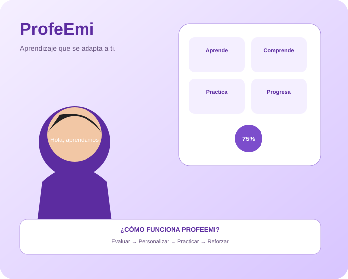

Guía paso a paso
No entrega simplemente el resultado: guía el razonamiento.
Aprendizaje guiado y personalizado: la solución busca enseñar paso a paso y adaptar la forma de llegar al estudiante.

ProfeEmi parte de la práctica y la interacción para identificar qué necesita reforzar cada estudiante y buscar una forma adecuada de explicarlo.
No entrega simplemente el resultado: guía el razonamiento.
Busca conocer el nivel de entrada y las áreas a reforzar.
La enseñanza puede ajustarse según la interacción.
El objetivo es aprender de la experiencia del estudiante.